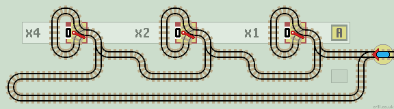
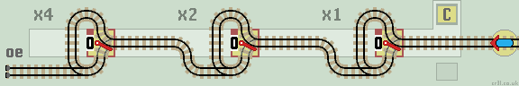
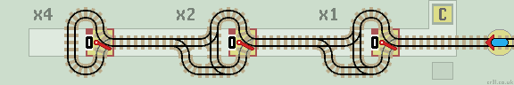
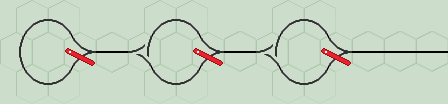
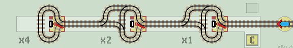
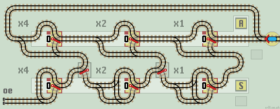
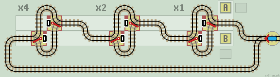
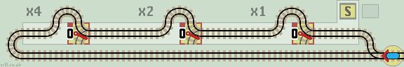

Functions using Single (unlinked) Points
This page shows some basic functions which will be used in the later example layouts. All functions use single (unlinked) points.
The train enters each function from the right. This allows registers to be extended to the left to accommodate larger numbers.
Inverter (1's complement)This circuit flips all points in a register to produce the 1's complement value. The train inverts each point in turn and exits (returns) back along the same track. Also see flip-flop inverter. You can recognise this circuit in a layout by the 'lazy point in a loop' arrangement. The lazy point directs the train in either a clockwise or anti-clockwise direction. The train inverts the point as it exits the loop. |
|
| 
|
| Click layout to pause/run train | Click points to switch 0/1 | Click start circle to reset train/points |
Sequential Latch
Usually, this is used as a control register, not a data register.
To begin, all points are set to 0. This train sets the next point to 1 on each visit, and returns back along the same track. An overflow error can occur.
| 
|
| Click layout to pause/run train | Click points to switch 0/1 | Click start circle to reset train/points |
Click the train to flip each point in turn.
First Return LatchUsing just the first latch (set to 0) creates a 'first return latch'. The train is returned on its first visit, but allowed to pass on all subsequent visits. Used in multiplier and subtract layouts. |
 |
Count Up (increment)
The above circuit is the basis of a count up function. The train increments the binary number by 1 and returns back along the same track. The data register records the number of times the train enters the circuit.
This 3-stage counter counts up to 7 (binary 111). It then 'rolls over' to zero (000). The maximum count can be increased by adding more stages.
| 
|
| Click layout to pause/run train | Click points to switch 0/1 | Click start circle to reset train/points |
See this layout in action on You Tube !
And this is the same layout on a Duplo hexagonal grid:
|  |
Count Down (decrement)
A mirror image of the above layout produces a 'Count Down' function. The train decrements the binary number by 1 and returns back along the same track.
This 3-stage counter 'rolls over' to 7 (binary 111) when it reaches zero (000). The maximum count can be increased (minimum count can be reduced?) by adding more stages.
| 
|
| Click layout to pause/run train | Click points to switch 0/1 | Click start circle to reset train/points |
See Linked Functions page for combined 'Count and Clear' bi-directional functions.
Accumulator
This layout adds the number stored in the upper register A to the number in the lower 'sum' register S. If register A is set to 1, then the layout acts as a Count Up function.
| 
|
| Click layout to pause/run train | Click points to switch 0/1 | Click start circle to reset train/points |
How It Works
If data in register A is 0 the train passes on to the next stage. If it is a 1, the train passes down to the lower S register. This is recognisable as a Count Up circuit, so the 1 is added to S, including any carry over as necessary.
When the train returns to the stage it started from, it is diverted by the passive lazy point back up to A to continue the calculation. It is not necessary to reset these lazy points at the start of a new calculation. They are not interactive (cannot be mouse clicked).
The train exits on the same track when done. If the train halts on track 'oe' then an overflow error has occurred in register S. See Add Subtract layout.
Subtract
The Count Up circuit in the above layout can be replaced with a Count Down to create a Subtractor. See Add Subtract layout.
Copy
Lazy points can be 'read' or 'written' depending on which way they are traversed. This circuit copies data from the upper register A to the lower register B. There is no need for Error or Clear lines.
This layout saves space by placing register points side by side. They are offset vertically so that they are easier to read, with register A above register B. Also see Bi-directional Copy function.
| 
|
| Click layout to pause/run train | Click points to switch 0/1 | Click start circle to reset train/points |
Clear (Set to 0)
Using the above Copy function we can load a register with any binary number by setting points to the specific number required. A common number to load is zero which clears the register. Hard wiring (hard tracking?) the S register points with 'zero' creates this clear function.
| 
|
| Click layout to pause/run train | Click points to switch 0/1 | Click start circle to reset train/points |
The lower branch lines are unterminated. They can never be reached, so the train cannot leave the tracks. They can be 'tidied up' with a sprung point (either way) to the input line if required.
If the points are reflected, then the circuit can be redrawn so that the register is cleared from LSB to MSB.
Zero Detect
A specific number (usually 0) can be detected by a Multi Input Nor gate. The train is returnd if any point is set to 1 (usually to continue the calculation) and halted if all points are set to 0.
Next, we'll look at some linked functions where lazy points are linked together.